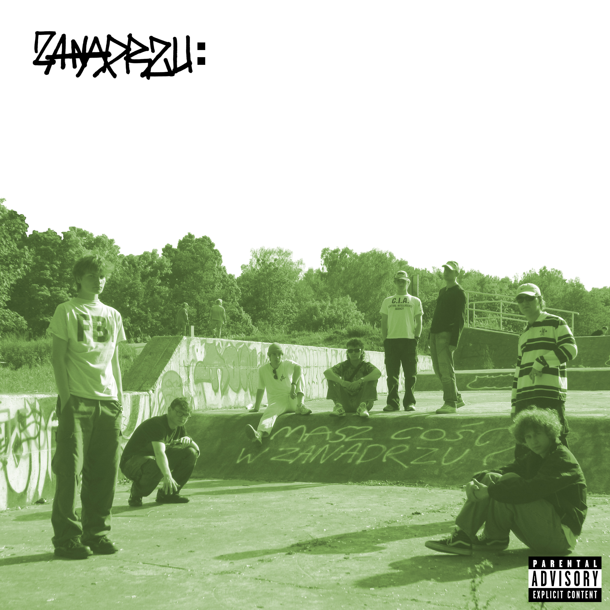

CD (jewel case) / 14 Utworów + książeczka
Album grupy hip-hopowej ziomków. Bardziej old school, boom bap. Bity robione głównie w Audacity i klonie Protrackera, nagrywane głównie w piwnicy jednego z kolegów.
CD zawiera pare bonus tracków!
Nagrano na przestrzeni marzec-czerwiec 2023
1. Introdukcja
2. Calma
3. Co to jest?
4. Marazm
5. Alejkum Salam (skit)
6: Buda: Part 9
7: ADHD
8. Miś Koliber
9. Magda Gieras (skit)
10. Buda: Part 10*
11. Hip-Hopowe Gastro
12. Apatia
13. Sąsiadka (skit)
14. Piwnica Stuff
Michał "Piszczel" Czapski - prod.
oprócz * - Kacper "Caper" Wronka
MCs: Piszczel, Iggy Abra, ESAD, Caper, Ponton, Drakestor, Mikosh, Psio
Michał Czapski - wydanie/grafika
Wydano - Czerwiec 2023
Zostało pare sztuk! Możesz napisać :)
Posłuchaj na Soundcloud.
Piwnica Stuff / Close Call Records © 2023